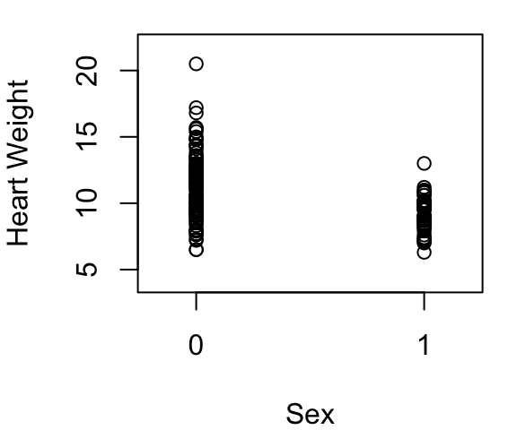
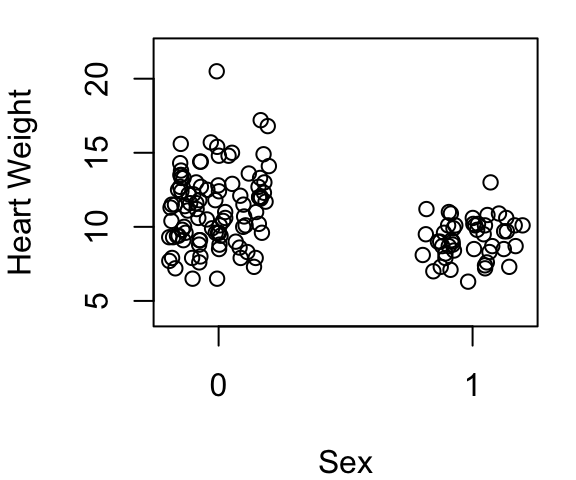
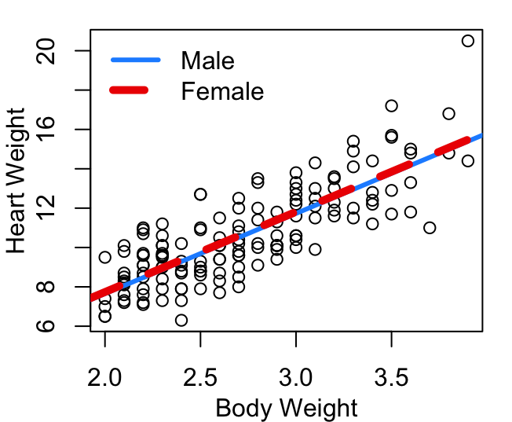
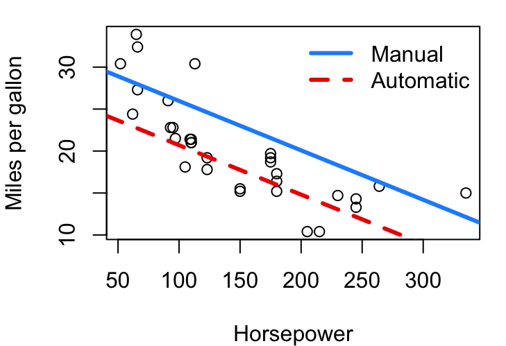
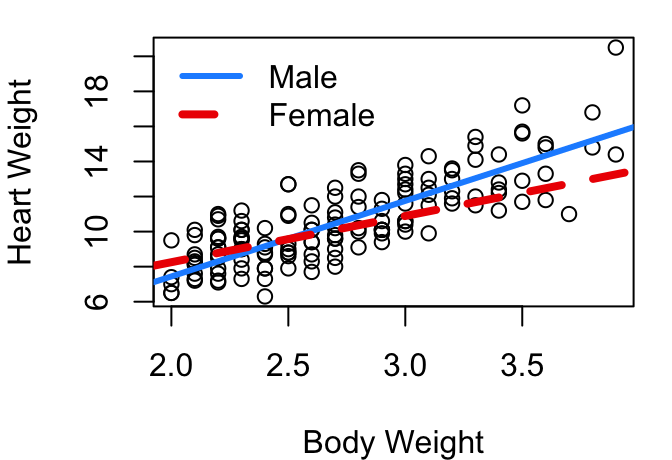

An indicator variable, also known as a dummy variable, is a variable used to represent membership in a specific category of a categorical variable. Using only the values 0 and 1, the indicator variable will indicate the presence of a particular attribute or membership in a category of interest with a 1, and use a 0 for everything else.
Indicator variables are essential when incorporating categorical variables—like treatment group, sex, or employment status—into linear regression models. For example, to represent whether each individual included in a survey is employed or unemployed, an indicator variable could be defined as 1 if the person is employed, and 0 if the person is unemployed.
For categorical variables with more than two categories, a separate indicator variable is created for each category except one, which becomes the reference (or baseline) group. This encoding, often called one-hot encoding, ensures that the model can estimate effects relative to the reference group while avoiding perfect collinearity (remember we need \(X^TX\) to have an inverse). For instance, if we instead treated employment as having three categories of full-time, part-time, or unemployed we would create two indicator variables: one for full-time and one for part-time. Unemployed would then serve as the reference group.
The choice of which group serves as the reference group is arbitrary, but it will affect the interpretation of model coefficients. For this reason, if your categorical variable is ordinal, it is customary to select either the lowest or the highest ordered category as your reference group; Interpretation of coefficients relative to max or min just often makes the most sense.
6.2 Indicator only Regression Model
While not commonly done, you can create a simple linear regression model using only an indicator variable as a predictor. Consider again the cats data frame in the MASS library. This data contains not only the heart weight and body weight of 144 cats as we’ve seen in earlier models, but also the sex of those 144 cats. From Figure 6.1 below it is clear that the heart weight of female cats is a bit less on average than the heart weight of male cats.

(a) Straight data

(b) Jittered sex for clarity
Figure 6.1: Cat heart weight by sex, 1=Female
If we fit a model of the form \(y=β_0+β_1x+ε\) and have \(x=0\) for female cats and \(x=1\) for male cats what values of \(β_0\) and \(β_1\) should we expect? Since there are only two possible values of \(x\), there will be only two possible fitted values from our model: one corresponding to when \(x=0\) and one for when \(x=1\). To minimize the sum of squared error, we want the output when \(x=0\) to be equal to the mean heart weight for female cats and the output when \(x=1\) to be equal to the mean heart weight for male cats. This is achieved when \(β_0\) equals the mean heart weight for females and when \(β_0+β_1\) mean heart rate for males. Therefore \(β_1\) should be the difference between the two group means.
Estimate Std. Error t value Pr(>|t|)
(Intercept) 9.202128 0.3250734 28.307842 2.959034e-60
SexM 2.120553 0.3960745 5.353924 3.379786e-07
Just as suspected, the result gives us an intercept equal to the mean heart weight of female cats and a slope equal to the difference between male and female heart weights.
6.3 Adding in an Indicator
You can also add an indicator term to a model to create a linear equation of the form:
\[
y=β_0+β_1x_1+β_2x_2+ε
\]
Continuing with the cat heart weight example, we could fit this type of model with \(y=\) heart weight, \(x_1=\) body weight, and \(x_2=\) sex (0=female, 1 = male)
How can this be interpreted? First, note that the third row begins with SexM this is R’s way of communicating that for the Sex variable level M is the one that is corresponding to the indicator equalling 1. This tells us that the heart weight of cats is, on average, equal to -0.415 plus (4.0758 \(\times\) body weight) for female cats, and (-0.415 plus -0.0821 ) plus (4.0758 \(\times\) body weight) for male cats. Same slope for all cats, but intercepts that differ by -0.0821.

Figure 6.2: Cat heart weight as function of body weight
Hmmm… the two lines look pretty much the same. Why is that? Well take a look again at the model output above. We see that the difference in intercepts is only -0.0821, not a very big number. But scanning across this line in the output we also see that the p-value in the t-test of \(H_o:β_2=0\) is 0.788 which means that with any reasonable \(\alpha\) level, we would fail to reject the null. This means the coefficient associated with sex is not significantly different from zero, and the two lines aren’t really needed - one will do just fine.
Other times the indicator will matter quite a bit. Consider the mtcars dataframe from the datasets library. In a model predicting vehicle fuel efficiency as a function of horse power, does it help if we add in an indicator that is 1 for a manual transmission and 0 for an automatic? Our model will again be in the form of:\[
y=β_0+β_1x_1+β_2x_2+ε
\]
with \(y=\)mpg, \(x_1=\)horsepower, and \(x_2=\)manual transmission.
Estimate Std. Error t value Pr(>|t|)
(Intercept) 26.5849137 1.425094292 18.654845 1.073954e-17
hp -0.0588878 0.007856745 -7.495191 2.920375e-08
am 5.2770853 1.079540576 4.888270 3.460318e-05
In this case, the test of \(H_o:β_2=0\) has a p-value that is 3^{-5} meaning there is strong evidence this additional term related to transmission type matters. In a plot of the fitted model we see:

Figure 6.3: Car MPG as function of HP
Figure 6.3 shows us very clearly that cars of equal horsepower tend to get better gas mileage if they are a manual transmission. The difference between the two lines is \(β_2\), 5.2771.
6.4 Interacting with an Indicator
Parallel lines are great and all, but there’s no reason to believe that the best model fit for two levels of your indicator should always have the same slope. Ideally we want a model that takes a form more like:\[
y=β_0+β_1x_1+β_2x_2+β_3x_1x_2+ε
\]
With this structure, for our baseline level of \(x_2=0\), the \(β_2\) and \(β_3\) terms disappear since they are multiplied by zero, leaving you with the basic \(β_0\) as intercept and \(β_1\) as slope. When \(x_2=1\) though, the \(β_2\) and \(β_3\) terms stick around and \(β_0+β_2\) becomes the intercept and \(β_1+β_3\) becomes the slope. Having a \(x_1x_2\) term is called having an interaction between \(x_1\) and \(x_2\). The \(x_2\) indicator value is interacting with the slope associated with your continuous \(x_1\).
Revisiting the cat heart and body weight data, might sex play a significant role in predicting heart weight if we allow slope to change as well as intercept? Here’s the R model summary for the revised model that includes the \(β_3x_1x_2\) term:
The last row labeled Bwt:SexM corresponds to our \(β_3x_1x_2\) term. Reading across the output summary table shows us that this \(β_3\) coefficient is estimated to be significantly different from 0 at the \(\alpha=0.05\) level. The \(β_2\) term allowing for different intercepts that was not significant in the limited \(y=β_0+β_1x_1+β_2x_2\) model is now also showing a p-value below 0.05 at 0.0453. Plotted, the fits for male and female cats now look like the lines in Figure 6.4.

Figure 6.4: Cat heart weight as function of body weight
In R
In the above example using mtcars, you may have noticed that the reference level wasn’t clear in the model summary output. That is because the transmission type variable, am, is pre-coded as a 0/1 indicator variable. The help menu for mtcars explains that am is a 0 for automatic, and 1 for manual. When read into R, it takes this 0/1 coding as a numeric 0/1 and doesn’t think of it as a factor type needing a reference level at all. Mathematically that is fine - it just makes interpretation a little trickier because you need to remember what is coded as 0 and what is coded as a 1.
Here is the code for the model described earlier predicting mpg as a function of horsepower and transmission type (am) :
# adding on +am to mpg~hp creates an additive beta for transmissionmod_mpg<-lm(mpg~hp+am, data=mtcars)summary(mod_mpg)$coef
Estimate Std. Error t value Pr(>|t|)
(Intercept) 26.5849137 1.425094292 18.654845 1.073954e-17
hp -0.0588878 0.007856745 -7.495191 2.920375e-08
am 5.2770853 1.079540576 4.888270 3.460318e-05
A simple run of ?mtcars to pull up the help menu will show you that am=0 for automatics and therefore automatic is the baseline reference level for transmission type and the \(β_2\) shown for am is the change in intercept associated with a manual transmission.
In the cats data set explored this chapter, Sex is coded with F and M levels and is recognized by R as a factor type variable. You can include factors in your lm function input formula as-is and R will take care of the 0/1 coding behind the scenes for you. The first level of your factor will be treated as the 0 reference level. Here is code that first looks at the levels of Sex, then creates and summarizes the cat heart weight model including indicator interaction:
# look at levels to know which will be reference grouplevels(cats$Sex)
[1] "F" "M"
# multiplying the indicator factor creates both an additive beta for# different intercepts and the beta for the slope changemod_cats_full<-lm(Hwt~Bwt*Sex, data=cats)summary(mod_cats_full)$coef
As pointed out earlier, the row labels of SexM and Bwt:SexM also make clear level M is the one that is being treated as a 1, meaning level F must be our 0 reference group. If you want that switched, you can use relevel to change the ordering of the levels of the factor variable.
6.5 Multi-level factors in Regression
For categorical variables with more than two categories, we create a separate indicator variable for all categories except one, our baseline reference group. The below illustrates this process with an example from the Cars93 data set from the MASS library. Vehicle type is a factor that takes on six different values: Compact, Large, Midsize, Small, Sporty, and Van. To incorporate this one factor with six levels, we create five new variables: Large, Midsize, Small, Sporty, and Van; each coded as a 0 or a 1. We do not need a variable for Compact - the Compact car level is signaled by not being any of the other types. This is often called one-hot encoding.
One-hot encoding example
This is how car type can be included in a regression model - through the addition of five indicators. The order of the levels of car Type is, by default, alphabetical:
To build a model of vehicle highway mpg as a function of weight, allowing for different intercepts for each type, the code looks much like what we’ve seen with the lm command before:
The main difference here is that withe the simple +Type we’ve now added five more β estimates; one for each of the new indicator terms. So the given intercept of 49.532 is the intercept for the baseline Compact car type, then we add 2.0885 to that to get the intercept for Large cars, add 0.0983 to 49.532 to get the intercept for Midsize cars, and so on through to adding -1.8398 to 49.532 for Vans.
Note in these results none of the p-values in the last column for these Type-related βs indicate the β is significantly different from 0. This does NOT mean that no two vehicle types have significantly different intercepts, it just means that none of the vehicle types have an intercept significantly different from Compact cars. If a different car type were selected to be the reference level, these β estimates and their corresponding p-values would change. Below are the results from the same model but using Van as the baseline reference rather than Compact.
The resulting linear equations are exactly the same. Slope is obviously the same as before, and the intercepts are just expressed with relation to a different baseline. Intercept for Midsize cars for example was originally 49.532 + 0.0983=49.6303 and in the newer model the Midsize intercept is 47.6922 + 1.9381=49.6303. So no real change… just a different comparitor in the baseline position. You’ll also see that with Van as the baseline, the β associated with Large cars now has a p-value below 0.05 indicating it is significantly different from zero.
For the full model with interactions between car type and weight the addition of *Type leads to the addition of 10 new β estimates: five for unique intercepts plus five for unique slopes. And just as we saw with the additive indicator model, the values of the β estimates will change depending on what factor level is used as the baseline reference level.
With the default Compact as the reference level of type:
Continuing with the examples above in Section 6.5:
What is the linear function to predict the highway fuel efficiency of a large car that weighs 3800 lbs using the model with Compact cars as the reference level?
Confirm the linear function from (a) still applies if you instead use the model fit with Vans as the reference level.
If the reference level is changed to Sporty, what do you expect the TypeSmall and Weight:TypeSmall coefficient estimates to be? Explain the reasoning and answer without running the new model.
Create a plot showing the six fit lines predicting highway mpg as a function of vehicle weight - one line per vehicle type. You’ll need the Cars93 data set contained in the MASS library.
Are all assumptions necessary for inference met? Explain.
Consider all cats with a body weight 3.5kg or less in the cats data frame from the MASS library.
Fit a simple linear regression model estimating a cat’s heart weight as a function of body weight. What is the equation of your fitted model?
Are all assumptions for inference met by your model in (a)? Explain.
Is there sufficient evidence that the slope is greater than 3? Explain.
Now fit a model estimating heart weight using body weight interacting with cat sex. What is the equation of the fitted model?
Are all assumptions for inference met by your model in (d)? Explain.
Is there sufficient evidence that the slope is greater than 3 for male cats? Is there evidence that the slope is less than 3 for female cats? Use an \(\alpha=0.05\) level and explain your findings thoroughly.
Create a plot showing both the male and female cat fit lines. Jitter your body weights and use either plotting characters or color to distinguish which sex applies to each data point.
Why is it perfectly reasonable to calculate a prediction interval for the heart weight of a male cat weighing 3.3 kg, but not a good idea to make a prediction interval for a female cat weighing 3.3 kg?
The crabs data set in the MASS library contains a variety of body measurements on two species of crabs.
Estimate a crab’s body depth as a function of carapace width, including crab species information in your model. What type of model makes the most sense: a model with an additive inclusion of a species indicator, or a model with a multiplicative interaction with a species indicator? Explain your answer.
What is the fitted equation of your selected model?
Do Orange crabs and Blue crabs have a significantly different intercept in a linear model using carapace width to explain body depth? Explain.
Are all assumptions for inference met in your model? Explain, using an \(\alpha=0.01\) significance level in any tests you run. If your model needs fixing for inference procedures to be valid, fix it.
Using a model that meets all assumptions at the \(\alpha=0.01\) level, fit and interpret a 90% confidence interval for the mean body depth of a Blue crab with a carapace width of 40mm. Then fit and interpret a 90% confidence interval for the mean body depth of an Orange crab with a carapace width of 40mm. How do they compare?
Now complete a model predicting body depth as a function of carapace width using an indicator term for crab sex. What indicator term is more helpful in predicting body depth: sex or species? Explain.
The openintro library includes a data frame called fastfood that contains nutrition information for 515 fast food items.
Fit a model for food item calories as a function of total fat content. Include restaurant as an interaction term in your model. Which two restaurants have the most similar fit lines? What are those two fit lines?
Which restaurant has the steepest slope? Which has the least-steep slope? Are the two slopes significantly different from each other?
Fit a new model that does not include restaurant. Which restaurant from your first model comes closest to matching this restaurant-blind overall fit for calories as a function of fat? Explain.
Create a plot showing the raw data with three lines: the fit for the restaurant with the steepest slope, the fit for the restaurant with the least-steep slope, and the fit for the restaurant that most closely matched the restaurant neutral fit. Include a legend that provides the name of the restaurant associated with each model fit.